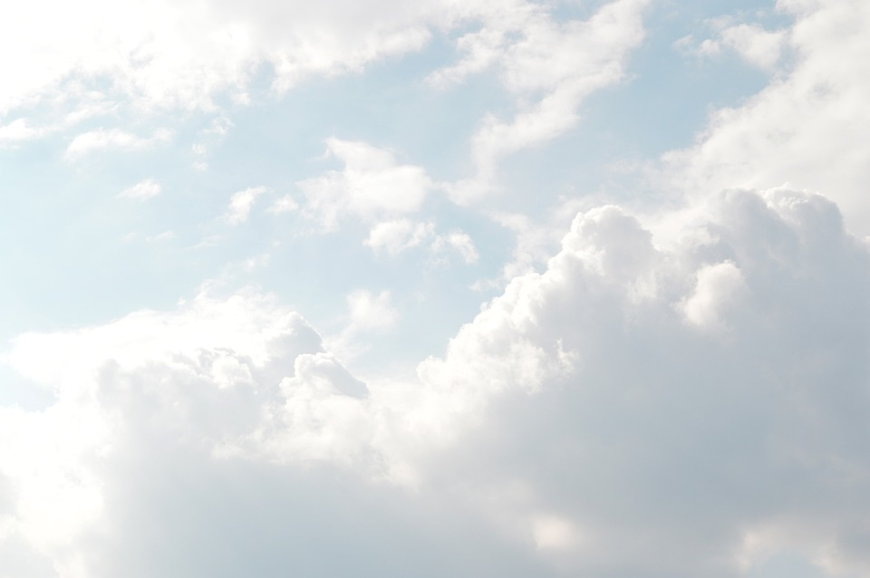
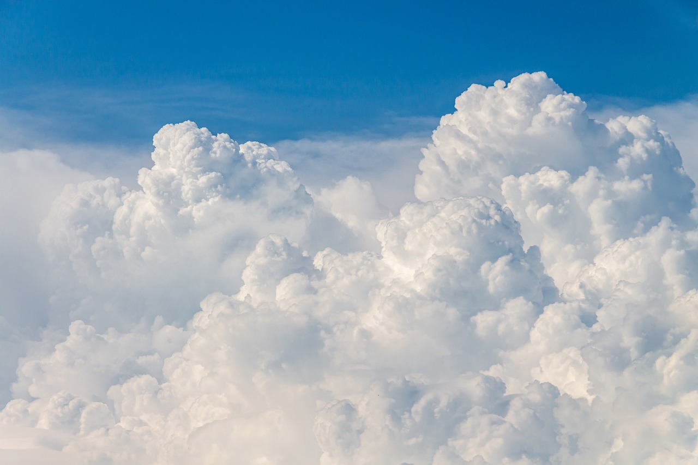
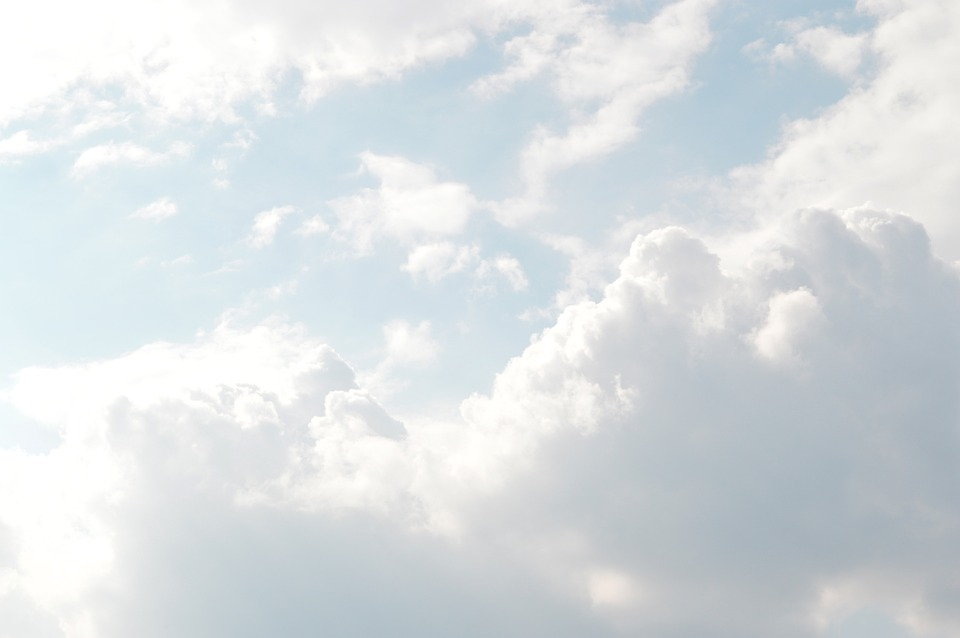
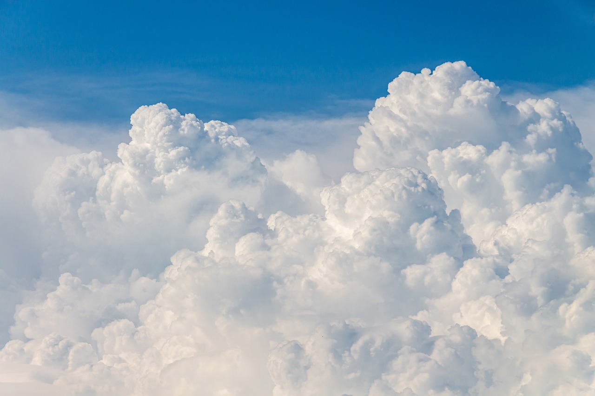

저는 황윤정이라고 합니다. 저는 블루계열의 색을 좋아합니다. 그래서 하늘, 바다들을 좋아합니다. 그리고 여행을 가는 것을 매우 좋아합니다. 하지만 가장 선호하는 색상이 있습니다. 하늘색에 가까운 파스텔 느낌이 있는 색을 좋아합니다.
하늘
지평선 또는 수평선 위로 보이는 무한대의 넓은 공간.
사람들이 흔히 보는 하늘의 다양한 모습은 지구의 대기가
있기에 볼 수 있는 것이지만, 대기가 희박한 달이나 다른
행성에서도 땅이 있으면 그와 대비되는 공간을 하늘이라 할 수 있다.
맑은 날에는 기본적으로 아래로 내려갈 수록 진해지는 연한 푸른색을 띈다.
새벽녘이나 노을에는 붉은색, 노란색 등 다양한 색이 섞여 다채롭다. 먹구름으로
덮여있을 때엔 푸른빛이 섞인 짙은 회색을 띈다. 밤이 되면 검게 변하지만,
매우 짙은 보라색으로 여겨지기도 한다. 구름이 적고 빛공해로부터 자유로운
자연에 있다면 수많은 별을 볼 수 있다.
바다
지구에서 저지대를 채우고 있는 하나의 거대한 소금물 덩어리.
고여 있는 바닷물의 표면, 즉 해수면보다 더 높은 지대를 이루어 드러난
지표면을 뭍 혹은 육지라고 부른다. 바다는 지구 표면 대부분을 덮어 하나의 커다란 권역을
이루고 있다. 바닷물은 수증기로 증발할 때 에너지를 흡수하고, 그 과정에서 구름이 형성될 때
열 에너지를 방출하여 각 권을 순환한다. 에너지의 흐름도 함께 일어나는 건 덤.
 


